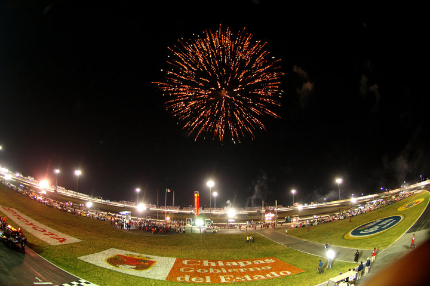
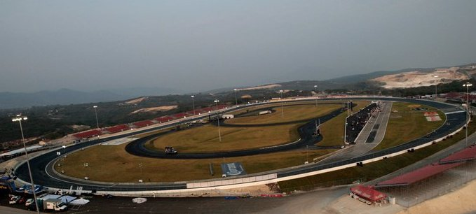
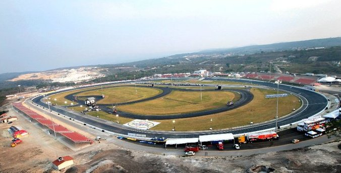
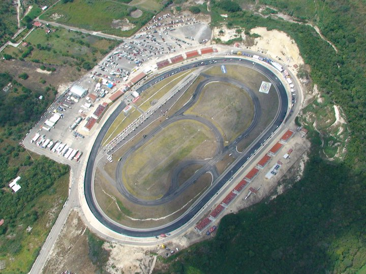
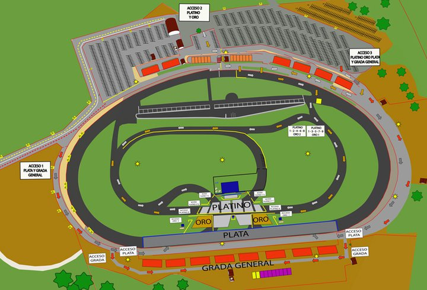

El Autódromo Chiapas es una pista tri-ovalo ubicada en Berriozábal, Chiapas. Es un proyecto de inversión privada para el fomento y práctica del automovilismo deportivo y único en su tipo en el sureste de la República Mexicana, avalado por la Federación Mexicana de Automovilismo Deportivo A.C. El lugar tiene una capacidad para 17.000 personas. . Este magnífico inmueble cuenta con una infraestructura de primer nivel. . La infraestructura del autódromo garantiza todas las medidas de seguridad para la organización y para todos los aficionados.
El óvalo tiene una longitud de 1,2 kilómetros (3/4 milla). El circuito interior cuenta con 2,05 kilómetros (1 1/4 milla) de longitud y 12 ° de la banca en los giros. La infraestructura es de primer nivel y cuenta con: trazo de 5 circuitos diferentes en el interior del autódromo, Torre de control, Pista de motocross, 250 Estacionamientos VIP, 13 suites con todos los servicios, 42,000 metros cuadrados de pasto, Zona comercial con 2,000 metros cuadrados de superficie, Oficinas con sala de juntas, bodegas y recepción, entre otras.
Carretera Kilómetro 190 Carretera México-Tuxtla Gutiérrez en el Municipio de Berriozábal, Tuxtla Gutiérrez.
Saliendo de la ciudad de Tuxtla Gutiérrez, dirigirse hacia el poniente de la ciudad, tomar la carretera Internacional México – Tuxtla Gutiérrez #190, continuar por la misma carretera en dirección a Tonalá haciendo un recorrido de aproximadamente 15 km.
En el lugar, se pueden practicar algunos eventos locales (bajo la debida autorización), tales como: karting, touring cars, dragracing y en fechas programadas se lleva a cabo el campeonato Nascar Corona Series.





posicione el mouse sobre las imágenes